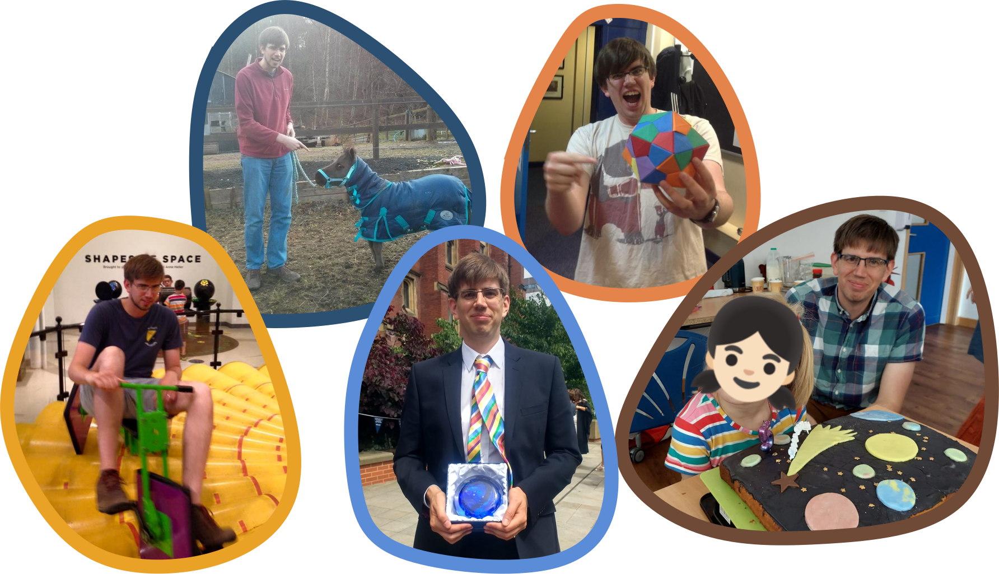
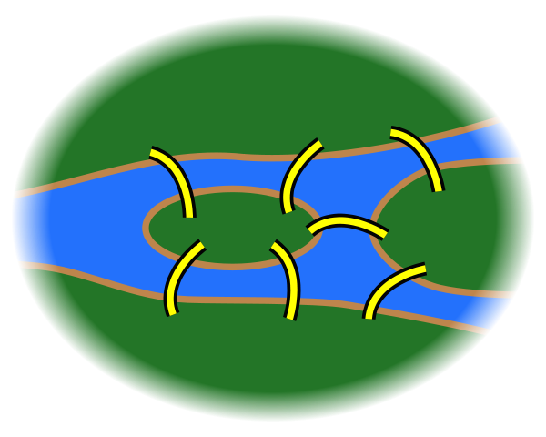

The Unintentionally Useful Consequences of Playing Games with Maths
Christian Lawson-Perfect
About me
Unintentionally useful maths I won't be talking about today
- Found the Fibonacci numbers in my baby's stacking cups
- Used error-correcting codes to memorise a lullaby
- Wrote an algorithm for finding graph automorphisms while extending a puzzle
The unintentionally useful maths I will be talking about today
One day, I was playing about with a remarkably mathematical shape.
Platonic solids
A polyhedron is a 3-dimensional shape with flat sides and straight edges.
A Platonic solid is a solid whose faces are all the same regular polygon, with the same number of faces meeting at each vertex.
What can we say about a polyhedron?
- Number of edges, faces, sides.
- Shapes of the faces.
- Symmetries.
Graphs
A graph is a collection of points (vertices), and the edges joining them.
It doesn't matter where the points are, or what shape the edges are, or if the edges cross.
What can we say about a graph?
- How many vertices and edges?
- How many edges connecting each vertex?
- Does it look like a hedgehog?
What can we say about a graph?
Can you colour the vertices so that no two neighbours have the same colour?
OR
Can you arrange the vertices on two sides of a line so that no edge stays on the same side of the line?
A graph with this property is called bipartite.
Let's make a bipartite graph
What can we say about a graph?
Can you draw a path which goes along every edge once, and ends where it started?
A graph with this property is called Eulerian.
The bridges of Königsberg
What can we say about a graph?
Can you draw a path which goes through each vertex exactly once, and ends where it started?
A graph with this property is called Hamiltonian.

By the way
The Icosian game
Let's check if some graphs are Hamiltonian
Let's check if some graphs are Hamiltonian
Let's check if some graphs are Hamiltonian
Let's check if some graphs are Hamiltonian
Let's check if some graphs are Hamiltonian
A Theorem
Every bipartite graph with an odd number of vertices is
non-Hamiltonian.
The Herschel graph
A colleague showed me the Herschel graph, and asked what I could do with it.
The Herschel graph is the smallest non-Hamiltonian polyhedral graph.
The Herschel graph
The Herschel graph
Polyhedral?
Unintentionally useful maths
Graphs, groups and polyhedra turn up just about everywhere!
Mathematicians continue to ask silly questions about them.
- Social networks
- Epidemiology (!!)
- The shapes of viruses
- Cryptography